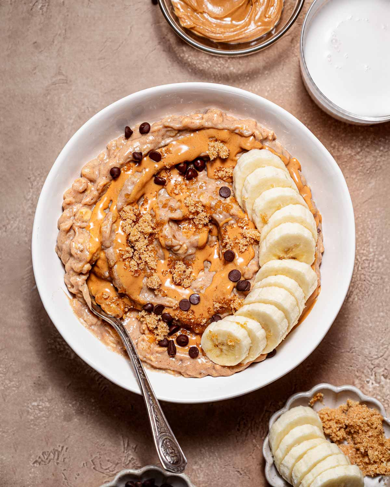

Peanut Butter Banana Oatmeal

Description
A warm, creamy bowl of oats with nutty peanut butter and cinnamon, topped with sweet banana slices. It's filling and works well as an easy breakfast, especially on cold mornings.
Ingredients
- rolled oats (½ cup)
- milk (1 cup)
- banana (1, sliced)
- peanut butter (1 tbsp)
- cinnamon (pinch)
- honey (optional)
Steps
- Combine the oats and milk in a small pot.
- Simmer over medium heat for 5 minutes, stirring often.
- Stir in the peanut butter and cinnamon.
- Top with the banana slices and a drizzle of honey.
HOME